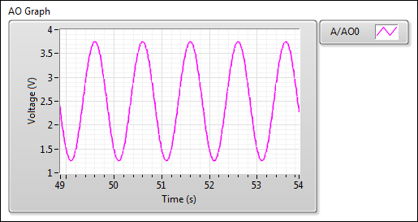
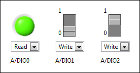
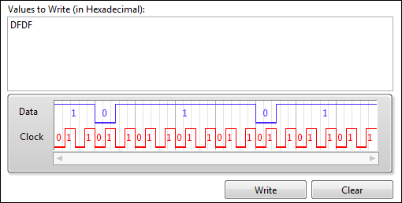
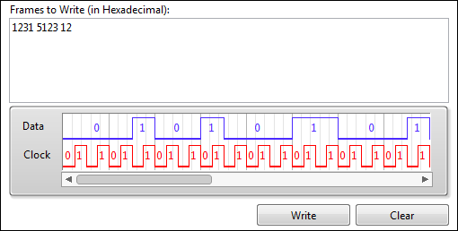
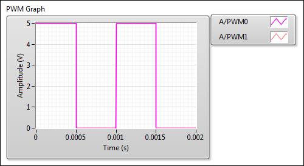
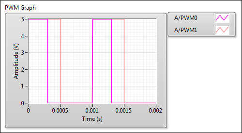
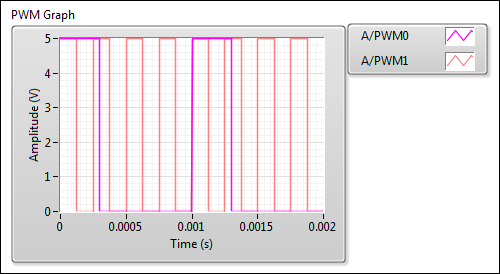

Overview
Launching the I/O Monitor
Connecting to the myRIO
Monitoring the Inputs and Outputs
Accessing the myRIO Toolkit Help
Legal Information
Use the myRIO I/O Monitor to test and monitor data from the myRIO I/O channels.
Launch the myRIO I/O Monitor in one of the following ways:
- In the myRIO USB Monitor, select Launch the I/O Monitor.
- In the LabVIEW Getting Started window, click the Set Up and Explore link and select Launch the I/O Monitor.
- In the Project Explorer window of a myRIO project, right-click a myRIO target and select Launch IO Monitor from the shortcut menu.
Connect to the myRIO in one of the following ways:
- USB cable
- Wireless network
- myRIO IP address or hostname
Note To learn about connecting to and configuring a wireless network for the myRIO, launch LabVIEW, click the Set Up and Explore link, and select Configure WiFi.
Use the configuration pages in the myRIO I/O Monitor to test and monitor the inputs to and outputs from the myRIO I/O channels as follows:
- Acquire and generate analog signals
- Acquire and generate digital signals
- Communicate data through the following protocols:
- Inter-Integrated Circuit (I2C)
- Serial Peripheral Interface (SPI)
- Universal Asynchronous Receiver/Transmitter (UART)
- Generate Pulse Width Modulation (PWM) signals
- Read data from the encoder (ENC)
Click the icons on the menu bar to switch between configuration pages. When you switch between configuration pages, you lose the configuration on the previous page. The following figure shows the menu bar.

Use the AIO configuration page to monitor analog signals by completing the following steps:
- Select an I/O connector from the Connector pull‑down menu. The connection diagram changes as you switch between different I/O connectors.
- Click a blue pinout (
 ) on the connection diagram to select an available channel. The selected analog output pinouts appear in the AO list and the analog input pinouts appear in the AI list. The analog values display as waveforms in AO Graph and AI Graph.
) on the connection diagram to select an available channel. The selected analog output pinouts appear in the AO list and the analog input pinouts appear in the AI list. The analog values display as waveforms in AO Graph and AI Graph.
By default, analog outputs display as sine waveforms with an amplitude of 1.25 volts. The following figure shows the default A/AO0.

- Change Amp (V) and view the sine waveforms in AO Graph.
- (Optional) To view analog outputs in direct current (DC) voltages, select DC Voltage from the Output Type pull‑down menu in the AO list. In AO Graph, the waveforms change to lines representing the DC voltages.
- (Optional) Change DC Value and view the DC voltage in AO Graph.
Use the DIO configuration page to monitor digital signals by completing the following steps:
- Select an I/O connector from the Connector pull‑down menu.
- Click a blue pinout on the connection diagram to select an available channel. The selected pinouts appear in the DIO list. The myRIO I/O Monitor enables Boolean controls for the selected pinouts.
Use the Boolean controls to specify reading or writing digital values. By default, the Boolean controls are in the Read mode, which means the myRIO I/O Monitor reads digital values.
- To write digital values, select Write from the pull‑down menu of the Boolean controls. The Boolean controls display as switch controls with a value 0, which means the myRIO I/O Monitor writes digital values on the logic low voltage level.
- To write digital values on the logic high voltage level, toggle the switch controls to 1.
In the following figure, the A/DIO0 channel is in the Read mode, the A/DIO1 channel in Write with the value 0, and the A/DIO2 channel in Write with the value 1.

Note If you select more than 20 pinouts, a vertical scrollbar displays on the right edge of this configuration page. Use the scrollbar to view the hidden controls.
Use the I2C configuration page to communicate between the myRIO and an I2C slave device. The myRIO works as an I2C master device.
Writing Data to I2C Devices
Complete the following steps to write data to an I2C slave device.
- Select an I/O connector from the Connector pull‑down menu.
Note You do not need to click the pinouts on the connection diagram. The myRIO I/O Monitor selects the pinouts related to I2C for you.
- Select Write or Write/Read from the Mode pull‑down menu. In the Write/Read mode, the myRIO I/O Monitor writes data to an I2C slave device and then reads data from the I2C slave device.
- If you select the Write/Read mode, specify Byte Count to set the number of bytes of data to read from the I2C slave device.
Note The myRIO I/O Monitor disables Byte Count in the Write mode.
- Select the data transfer rate from the Speed pull‑down menu.
- Enter the address of your I2C slave device in Slave Address (7-bit). You must specify the address in 7 bits.
- Enter the data to write, in hexadecimal, in the Values to Write (in Hexadecimal) text box.
- Click any empty space on this configuration page to preview the values to write. The Data waveform displays the signals on the data line (SDA). The Clock waveform displays the signals on the clock line (SCL).
The following figure shows the data and clock signals after you enter DFDF in Values to Write (in Hexadecimal).

- Click Write to write data to the I2C slave device.
Note Clicking Clear only wipes the data to write from this configuration page and does not affect the data written to the I2C slave device.
Reading Data from I2C Devices
To read data from an I2C slave device, select Read, Write/Read, or Continuously Read from the Mode pull‑down menu.
Use the SPI configuration page to communicate between the myRIO and an SPI slave device. The myRIO works as an SPI master device.
Writing Data to SPI Devices
Complete the following steps to write data to an SPI slave device.
- Select an I/O connector from the Connector pull‑down menu.
- Select Write or Write/Read from the Mode pull‑down menu.
Note You do not need to set Frame Count in the Write and Write/Read modes. Frame Count specifies the number of frames of data to read from the SPI slave device.
- Enter the frequency of the clock signal that your SPI slave device requires in Frequency.
- Set the number of bits that make up a single SPI transmission frame in Frame Length. The default is 8.
- (Optional) To control a chip select pin of the SPI slave device, select the Choose a DIO pin as the chip select pin checkbox and choose a pinout from the pull‑down menu.
- Enter the data to write, in hexadecimal, in the Frames to Write (in Hexadecimal) text box.
- Click any empty space on this configuration page to preview the frames to write. The Data waveform displays the signals on the data line (MOSI). The Clock waveform displays the signals on the clock line (SCLK).
The following figure shows the data and clock signals after you enter 1231 5123 12 in Frames to Write (in Hexadecimal).

- Click Write to write data to the SPI slave device.
Note Clicking Clear only wipes the frames to write from this configuration page and does not affect the frames written to the SPI slave device.
Reading Data from SPI Devices
To read data from an SPI slave device, select Read, Write/Read, or Continuously Read from the Mode pull‑down menu.
Use the UART configuration page to communicate between the myRIO and a UART device.
To enable UART, you must install NI-VISA and NI-VISA Server on your myRIO. Use Measurement & Automation Explorer (MAX) or run the Getting Started with myRIO wizard to install software on the myRIO.
Complete the following steps to install software on the myRIO using MAX:
- In MAX, expand Remote Systems in the configuration tree and then expand your myRIO target.
- Right-click Software and click Add/Remove Software to launch the LabVIEW Real-Time Software Wizard.
- Select the recommended software set for the myRIO.
- Click Next.
- Select NI-VISA and NI-VISA Server.
- Follow the instructions on the screen to finish the installation.
Writing Data to UART Devices
Complete the following steps to write data to a UART device.
- Select an I/O connector from the Connector pull‑down menu.
- Select Write from the Mode pull‑down menu.
- Set the baud rate, data bits, stop bits, and parity for communicating with the UART device. The configuration settings depend on the UART device you use.
- Enter character strings in Characters to Write.
- Click Write to write data to the UART device.
Reading Data from UART Devices
To read data from a UART device, select Read or Continuously Read from the Mode pull‑down menu.
Use the PWM/ENC configuration page to generate PWM signals by completing the following steps:
- Select an I/O connector from the Connector pull‑down menu.
- Click a blue PWM pinout on the connection diagram to select an available PWM channel. The selected pinouts appear in the PWM list. The PWM output signals display in PWM Graph.
By default, the PWM outputs return a frequency of 1,000 Hz and a duty cycle of 0.5. The duty cycle specifies the percentage of time the PWM signal remains high over one PWM cycle. The following figure shows the default PWM0 and PWM1. The two signals overlap because the frequency and duty cycles are the same.

- Drag the slider or enter a value in the text box in Duty Cycle (0-1) to change the duty cycle. The PWM signals in PWM Graph change as the duty cycle varies. The following figure shows that the duty cycle of PWM0 changes to 0.3 and the duty cycle of PWM1 remains 0.5.

- Enter the frequency value in Frequency (Hz) to change the frequency of the PWM signal. The PWM signals in PWM Graph change as the frequency varies. The following figure shows that the frequency of PWM0 remains 1,000 Hz and the frequency of PWM1 changes to 4,000 Hz.

Use the PWM/ENC configuration page to read data and decode signals from an encoder by completing the following steps:
- Select an I/O connector from the Connector pull‑down menu.
- Click a blue ENC pinout on the connection diagram to select an available ENC channel. The Encoder Configuration dialog box appears.
- In the Encoder Configuration dialog box, select the type of output signals that your encoder generates in the Encoder output signal type section.
- (Optional) If you want to reset the encoder tick counter to zero, select the Reset counter before starting checkbox.
- Click OK. The encoder pinout appears in the Encoder list. The encoder signal displays in Encoder Graph.
The value of Counter accumulates, representing the number of ticks read from the encoder since the last counter reset. The value of Counter ranges from ‑2,147,483,648 to 2,147,483,647.
- (Optional) Click Configuration () to reconfigure the encoder.
Note The Overflow? indicator returns TRUE when the value of the counter goes from the maximum value to the minimum value or from the minimum value to the maximum value. In this case, you must reset the encoder using the Encoder Configuration dialog box.
Refer to the LabVIEW Help, accessible by selecting Help»LabVIEW Help from LabVIEW, for information about the myRIO Toolkit. If you do not have LabVIEW installed, visit ni.com/manuals and search for the myRIO Toolkit Help.
Copyright
© 2015 National Instruments. All rights reserved.
Under the copyright laws, this publication may not be reproduced or transmitted in any form, electronic or mechanical, including photocopying, recording, storing in an information retrieval system, or translating, in whole or in part, without the prior written consent of National Instruments Corporation.
National Instruments respects the intellectual property of others, and we ask our users to do the same. NI software is protected by copyright and other intellectual property laws. Where NI software may be used to reproduce software or other materials belonging to others, you may use NI software only to reproduce materials that you may reproduce in accordance with the terms of any applicable license or other legal restriction.
End-User License Agreements and Third-Party Legal Notices
You can find end-user license agreements (EULAs) and third-party legal notices in the following locations after installation:
- Notices are located in the <National Instruments>\_Legal Information and <National Instruments> directories.
- EULAs are located in the <National Instruments>\Shared\MDF\Legal\license directory.
- Review <National Instruments>\_Legal Information.txt for information on including legal information in installers built with NI products.
U.S. Government Restricted Rights
If you are an agency, department, or other entity of the United States Government ("Government"), the use, duplication, reproduction, release, modification, disclosure or transfer of the technical data included in this manual is governed by the Restricted Rights provisions under Federal Acquisition Regulation 52.227-14 for civilian agencies and Defense Federal Acquisition Regulation Supplement Section 252.227-7014 and 252.227-7015 for military agencies.
IVI Foundation Copyright Notice
Content from the IVI specifications reproduced with permission from the IVI Foundation.
The IVI Foundation and its member companies make no warranty of any kind with regard to this material, including, but not limited to, the implied warranties of merchantability and fitness for a particular purpose. The IVI Foundation and its member companies shall not be liable for errors contained herein or for incidental or consequential damages in connection with the furnishing, performance, or use of this material.
Trademarks
Refer to the NI Trademarks and Logo Guidelines at ni.com/trademarks for information on National Instruments trademarks. Other product and company names mentioned herein are trademarks or trade names of their respective companies.
Patents
For patents covering the National Instruments products/technology, refer to the appropriate location: Help»Patents in your software, the patents.txt file on your media, or the National Instruments Patent Notice at ni.com/patents.
375331A-01